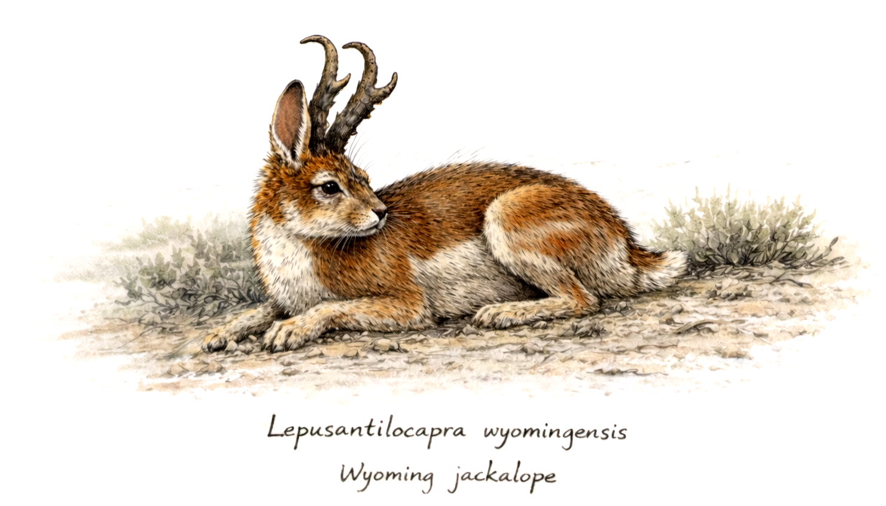
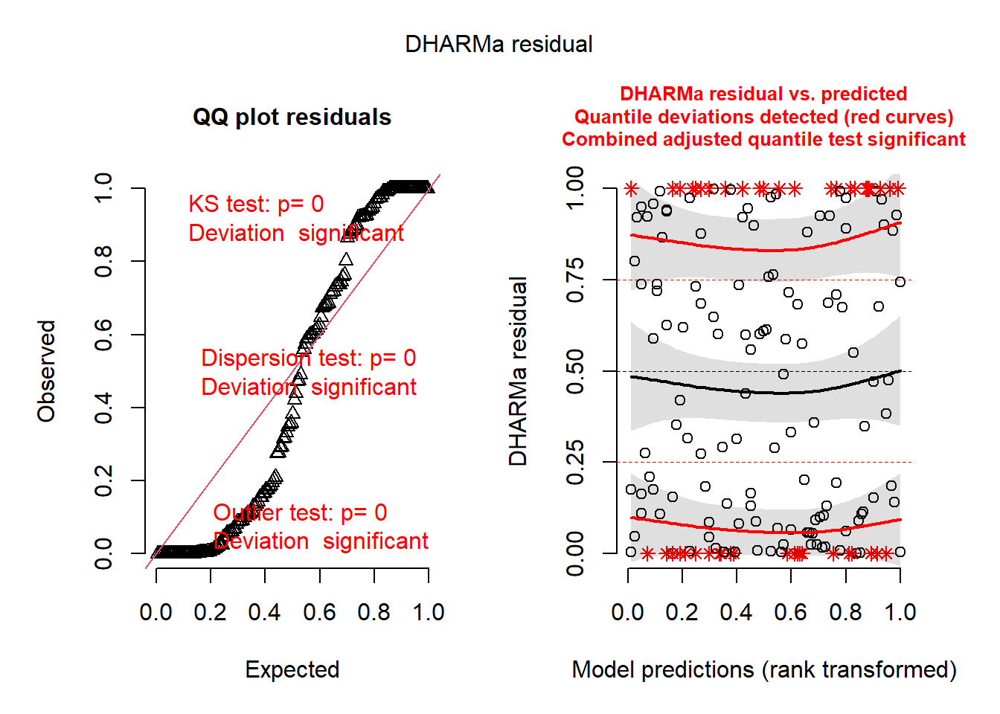
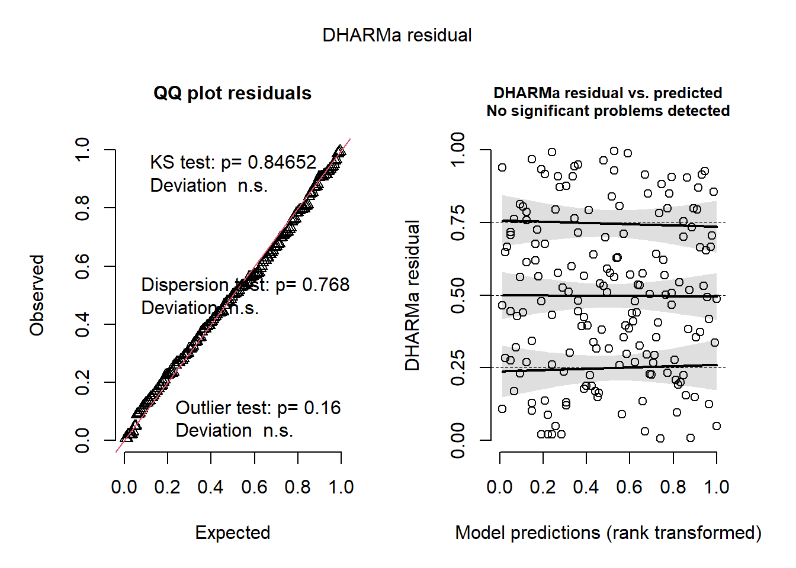

knitr::opts_chunk$set(warning = FALSE, message = FALSE)27 Tutorial: GLMMs
27.1 Introduction
In this tutorial, we will build a Generalized Linear Mixed Model (GLMM) using the glmmTMB package. This also could be done within the mgcv package (using gam() or related functions), and an extremely powerful alternative is the brms package (Bayesian regression modeling using Stan). We will start with glmmTMB for the sake of clarity; its model syntax is widely used in the ecological literature.
At this point in the course, however, we are not starting our analysis with a statistical model. We have already learned to begin with the causal question, define the estimand, represent our causal assumptions with a structural causal model (SCM/DAG), and determine an identification strategy. The statistical model comes after those steps.
ImportantIdentification first; estimation second
The DAG determines which variables must (and must not) be conditioned on to identify the causal estimand. A GLMM does not discover confounders, mediators, or colliders for us.
Our job here is different: given an identified estimand, how should we structure a statistical model that respects the response distribution and the dependence created by the sampling design?
GLMMs are especially useful when observations are not independent—for example, when we repeatedly sample the same plot, measure individuals within populations, observe nests within territories, or collect observations from multiple observers. The mixed part of a GLMM lets us represent this grouped structure explicitly.
By the end of this tutorial, you should be able to:
- distinguish fixed effects from random effects;
- translate a sampling design into an appropriate grouping structure;
- distinguish nested from crossed random effects;
- understand random intercepts and random slopes in both model notation and expanded equations;
- interpret variance, standard-deviation, and correlation estimates for random effects;
- diagnose whether the distributional and dependence assumptions of a fitted GLMM are reasonable; and
- understand the limited situations in which AIC can help compare statistical structures without redefining the causal adjustment set.
27.2 Workspace set-up
Please download the load_packages.r file again: - load_packages.r
source("chapters/class_r_scripts/load_packages.r")27.3 The example dataset: The Wyoming Jackalope (Lepusantilocapra wyomingensis)
For this example, you will need the following file (simply click to save):
Jackalope seem to be everywhere. Recently, during a survey of 31 forested study plots (1 square kilometer each) here in Wyoming, scientists discovered a cryptic species of jackalope. Because it is endemic to Wyoming, they named it the Wyoming Lorax (Lepusantilocapra wyomingensis). The researchers quantified their abundance (counts per survey and multiple surveys per plot), community diversity (all jackalope species in the plots), and also measured several habitat features, including percentage ground vegetation, percentage herb layer, and percent leaf litter.
Anyway, these scientists thought the scientific community would not believe their discovery, so they gave the dataset to the cryptid ecologists of ZOO/ECOL-5500.

You see several variables and plot information:
plot_id: values 1–31 for each unique plotforest_age: categorical variable describing the age class of each plottree_species: species of dominant tree in each surveyxandy: spatial coordinates in UTM (specific projection not important)abundance: count of L. wyomingensis in each surveyshannon_hlog10: Shannon diversity index of the jackalope community in each surveyground_veg: proportion of each survey area covered in ground vegetationherb_layer: proportion of each survey area covered in herbsleaf_litter: proportion of each survey area covered in leaf litter only (no vegetation)rain_in: round total precipitation (in inches…because that’s what their inexpensive rain gauge collected)
For the sake of brevity, let us assume that these data have already been cleaned and inspected. We will focus here on statistical estimation rather than data cleaning.
27.4 Start from the causal model
Suppose our causal question concerns the effect of ground_veg on jackalope abundance. Earlier SCM work has already specified the estimand and identified the variables that must be conditioned on (i.e. the confounder of rain_in). For this tutorial, assume that the DAG-derived adjustment set is already fixed. That will save us some time.
Basing our statistical modeling choices on our causal assumptions really matters. Unlike a kitchen-sink modeler, We will not fit every possible subset of predictors and ask the data which variables are important in the causal model. Variables required for identification are included in the model because of the causal assumptions;it is not because their inclusion improves AIC values, produce small p-values, or make residual plots prettier.
NoteAnother reminder: a statistical formula is not a DAG
A formula such as
abundance ~ ground_veg + rain_in
describes a statistical conditional mean. By itself, it does not state whether rain_in is a confounder, mediator, collider, precision variable, or something else. Those roles must come from the SCM and be understood prior to statistical modeling.
Let us now examine a different question: What model structure is requireds to estimate the identified relationship well?
27.5 First statistical decision: what kind of response do we have?
Our response, abundance, is a count. Counts are discrete and bounded below by zero. A Gaussian model can therefore generate impossible predictions (i.e. less than 0) and impose an altoegher inappropriate mean–variance relationship. A Poisson model is a sensible place to begin. Why? It is not because your residual diagnostics of the fitted model “selected” it. Rather, it is because it matches the kind of observations generated by the measurement process.
A simple Poisson GLM might look like this:
glm_01 <- glm(
abundance ~ ground_veg + rain_in,
family = poisson,
data = wyoming
)The precise fixed-effects terms in your own analysis would come from the estimand and its identification strategy. Here they simply give us a model to extend. But there is still an important problem: the rows in our dataset are not independent.
27.6 Why we need a mixed model
We repeatedly sampled each plot (range = 3–7 samples). This means there is unbalanced and non-independent data. A priori, we expect observations from the same plot to be more similar than observations from different plots. They share location, history, soil, vegetation, unmeasured habitat characteristics, and many other plot-level properties. You’re probably already thinking about spatial and temporal autocorrelation, rught?
If we ignore all of this clustering in the data, a conventional GLM acts as though every row provides completely independent information. That can give us inappropriate uncertainty estimates and can misrepresent the data-generating structure. This is where the GLMM enters.
First, make sure our grouping variable is treated as a factor:
wyoming <- wyoming |>
mutate(plot_id = as.factor(plot_id))27.7 Fixed effects and random effects do different jobs
A mixed model contains at least two conceptually different components.
Fixed effects describe systematic relationships that are explicitly represented in the conditional mean. In our causal analysis, the exposure and required adjustment variables occur here.
Random effects describe structured variation among groups in the data. They allow observations belonging to the same group to share a deviation from the population-average relationship.
For example:
mod_ri <- glmmTMB(
abundance ~ ground_veg + rain_in + (1 | plot_id),
family = poisson,
data = wyoming
)The new term is:
(1 | plot_id)Read this as: Allow each plot to have its own intercept.
27.7.1 What does a random intercept actually mean?
Ignoring the log link for a moment, an ordinary regression can be written as
\[Y_i = \beta_0 + \beta_1X_i + \epsilon_i.\]
Every observation shares the same intercept, \(\beta_0\).
A random-intercept model for observation \(i\) in plot \(j\) instead contains
\[Y_{ij} = (\beta_0 + b_{0j}) + \beta_1X_{ij} + \epsilon_{ij},\]
where
\[b_{0j} \sim N(0,\sigma^2_{plot}).\]
Here, \(\beta_0\) is the population-level intercept and \(b_{0j}\) is plot \(j\)’s deviation from that intercept. We do not estimate an unrelated fixed intercept for every plot. Instead, we assume that plot deviations arise from a common distribution whose variance, \(\sigma^2_{plot}\), is estimated from the data.
For our Poisson GLMM with a log link, the conditional model is more properly written as
\[\log(\mu_{ij}) = (\beta_0 + b_{0j}) + \beta_1X_{ij} + \beta_2Z_{ij},\]
with
\[Y_{ij} \sim \operatorname{Poisson}(\mu_{ij}).\]
So the random intercept shifts a plot’s expected abundance on the linear-predictor (log) scale.
TipThink “shared deviation”
A random intercept says that observations from the same group share something that moves their expected response up or down together. It is a compact way to represent dependence created by grouping.
27.8 Looking at the random-effects output
Run:
summary(mod_ri) Family: poisson ( log )
Formula: abundance ~ ground_veg + rain_in + (1 | plot_id)
Data: wyoming
AIC BIC logLik -2*log(L) df.resid
2472.2 2484.8 -1232.1 2464.2 169
Random effects:
Conditional model:
Groups Name Variance Std.Dev.
plot_id (Intercept) 0.2259 0.4753
Number of obs: 173, groups: plot_id, 31
Conditional model:
Estimate Std. Error z value Pr(>|z|)
(Intercept) 4.32799 0.08785 49.27 < 2e-16 ***
ground_veg 0.25294 0.04909 5.15 2.57e-07 ***
rain_in 0.01778 0.00569 3.13 0.00177 **
---
Signif. codes: 0 '***' 0.001 '**' 0.01 '*' 0.05 '.' 0.1 ' ' 1The output contains a section labeled approximately like this:
Random effects:
Conditional model:
Groups Name Variance Std.Dev.
plot_id (Intercept) ... ...The two most important quantities are:
- Variance: the estimated among-plot variance in the random intercepts, \(\sigma^2_{plot}\).
- Std.Dev.: the square root of that variance, \(\sigma_{plot}\), expressed on the model’s linear-predictor scale.
A variance near zero means that, conditional on the fixed effects in the model, little intercept variation remains among plots. A larger value means that plots differ substantially in their baseline expected abundance after accounting for those fixed effects.
Notice what this does not mean: It does not mean that we can interpret plot_id as the “effect of plot.” Remember that plot_id has not been assigned a conventionalregression coefficient that we interpret. The random effect is simply describing grouped heterogeneity and dependence.
You can inspect the estimated group-specific deviations with:
ranef(mod_ri)$plot_id
(Intercept)
1 -0.33972591
2 -0.41046352
3 -0.56491196
4 0.40374733
5 0.23490909
6 0.36976373
7 -0.96818704
8 -1.23000246
9 0.36529060
10 -0.08059812
11 0.29799440
12 0.49631594
13 -0.56893132
14 -0.19540635
15 -0.15451523
16 0.01428923
17 -0.54725646
18 0.11393420
19 0.15197990
20 1.13671636
21 0.67870389
22 -0.37744399
23 -0.06354533
24 0.31193624
25 0.10168163
26 0.25546879
27 0.19182066
28 -0.02161375
29 -0.14715874
30 0.27662662
31 0.30641773These are conditional modes (often informally called BLUPs, or Best Linear Unbiased Predictor). Positive values identify plots whose conditional intercept is above the population intercept; negative values identify plots below it. Because these estimates are partially pooled, groups with limited information are pulled more strongly toward the population mean. Note that some scientists have cleverly used this values as index metrics in secondary analyses.
27.9 Random slopes: when groups differ in a relationship
A random intercept allows plots to start at different baseline levels, but it assumes that the slope of a predictor is the same in every plot. Sometimes that assumption is unreasonable. Imagine that rainfall varies among repeated surveys within plots and that the relationship between rainfall and jackalope abundance differs among plots. We could allow the rain_in slope to vary:
mod_rs <- glmmTMB(
abundance ~ ground_veg + rain_in + (1 + rain_in | plot_id),
family = poisson,
data = wyoming
)The term
(1 + rain_in | plot_id)means: Allow both the intercept and the rain_in slope to vary among plots.
In expanded form:
\[\log(\mu_{ij}) = (\beta_0 + b_{0j}) + \beta_1X_{ij} + (\beta_2 + b_{1j})Z_{ij},\]
where \(b_{0j}\) is the random intercept for plot \(j\) and \(b_{1j}\) is its random deviation from the population rainfall slope. This tells us that a random-slope model estimates three features of group-level variation:
- variance among group intercepts;
- variance among group slopes; and
- covariance (usually displayed as a correlation) between intercept and slope deviations.
27.9.1 Interpreting random-slope output
A summary() may contain something like:
Random effects:
Conditional model:
Groups Name Variance Std.Dev. Corr
plot_id (Intercept) ... ...
rain_in ... ... ...The rain_in variance tells us how much the rainfall slope varies among plots. The correlation tells us whether plots with higher-than-average intercepts tend to have higher or lower rainfall slopes.
For example, a negative intercept–slope correlation would indicate that plots with relatively high baseline abundance tend to have less positive (or more negative) rainfall relationships. Be careful: this is a description of the fitted hierarchical structure, not automatically a causal explanation for why plots differ.
WarningA random slope needs replication at the right level
Do not add a random slope merely because the syntax exists. The predictor must vary within the grouping unit for the group-specific slope to be meaningfully informed by the data. A variable that is constant within each plot cannot provide repeated within-plot information about a plot-specific slope.
27.10 Random intercept versus random slope: picture the implied lines
A useful way to think about these models is to imagine one regression line for every plot.
With (1 | plot_id), the lines have different intercepts but the same slope:
\[\text{Plot 1: } (\beta_0+b_{01}) + \beta_1X\]
\[\text{Plot 2: } (\beta_0+b_{02}) + \beta_1X\]
\[\text{Plot 3: } (\beta_0+b_{03}) + \beta_1X.\]
With (1 + X | plot_id), both intercept and slope can differ:
\[\text{Plot 1: } (\beta_0+b_{01}) + (\beta_1+b_{11})X\]
\[\text{Plot 2: } (\beta_0+b_{02}) + (\beta_1+b_{12})X\]
\[\text{Plot 3: } (\beta_0+b_{03}) + (\beta_1+b_{13})X.\]
The population coefficients \(\beta\) describe the average relationship; the \(b\) terms describe group-specific deviations around it.
27.11 Nested random effects: hierarchical sampling
Ecological sampling designs are often hierarchical. Imagine that our study had several site_id values, multiple plot_id values within each site, and repeated surveys within each plot:
site
└── plot
└── repeated surveyObservations from the same plot share both a plot and a site. Plots within the same site share a site but are not the same plot.
A nested random-intercept structure can be written as:
(1 | site_id/plot_id)In lme4/glmmTMB formula notation, this expands to:
(1 | site_id) + (1 | site_id:plot_id)A complete model might therefore be:
# Example syntax only: site_id is not required to exist in this dataset.
# nested_mod <- glmmTMB(
# abundance ~ ground_veg + rain_in + (1 | site_id/plot_id),
# family = poisson,
# data = wyoming
# )The model estimates variation among sites and additional variation among plots within sites.
NoteUnique IDs can simplify nested syntax
If every plot_id is globally unique—plot 17 can occur in only one site—then
(1 | site_id) + (1 | plot_id)
can represent the same grouping hierarchy without explicitly constructing site_id:plot_id. If plot labels repeat within sites (e.g., every site has plots 1, 2, and 3), use the explicit nested structure or create a unique plot identifier.
27.12 Crossed random effects: membership in more than one grouping system
Not all grouping structures are hierarchical. Suppose multiple observers survey multiple plots, and the same observer can survey several plots while each plot can be surveyed by several observers.
Neither grouping factor lives “inside” the other:
observer A -> plots 1, 3, 8
observer B -> plots 1, 2, 8
observer C -> plots 2, 3, 7observer_id and plot_id are crossed.
We represent this as:
(1 | plot_id) + (1 | observer_id)For example:
# Example syntax only: observer_id is not required to exist in this dataset.
# crossed_mod <- glmmTMB(
# abundance ~ ground_veg + rain_in +
# (1 | plot_id) + (1 | observer_id),
# family = poisson,
# data = wyoming
# )The model now estimates one variance component for plot-to-plot heterogeneity and another for observer-to-observer heterogeneity.
27.12.1 Nested or crossed? Ask about the design, not the software
The distinction comes from how observations were generated.
- Nested: each lower-level unit belongs to only one higher-level unit (e.g., nest within territory).
- Crossed: units from one grouping factor can occur with multiple units of another grouping factor (e.g., observer × plot).
Do not decide this by trying formulas and seeing which one has the lowest AIC. The sampling design usually tells you the answer. Adhere to your study design and to your causal assumptions!
27.13 Combining nesting, crossing, and random slopes
Real studies can contain all of these structures simultaneously. For example, imagine repeated surveys of plots nested within sites, with observers crossed across sites, and rainfall effects allowed to vary among plots:
abundance ~ ground_veg + rain_in +
(1 | site_id) +
(1 + rain_in | plot_id) +
(1 | observer_id)This formula says:
- estimate the fixed effects required by the causal model;
- allow baseline abundance to vary among sites;
- allow both baseline abundance and the rainfall relationship to vary among plots; and
- allow baseline abundance to vary among observers.
That is a lot of structure. Whether the data can support it depends on replication, number of groups, variation within groups, and the amount of information in the response. Including too many random effects can cause model failure.
27.14 One careful use of AIC: comparing plausible statistical structures
We have deliberately not used AIC to choose the causal adjustment set. The DAG and identification strategy already did that work. There are, however, situations in which we may have more than one scientifically plausible statistical representation after the causal structure is fixed. For example, perhaps the study design clearly implies repeated measurements within plot_id, but we are uncertain whether there is enough evidence to estimate plot-specific rainfall slopes in addition to plot-specific intercepts.
We might compare:
mod_intercept <- glmmTMB(
abundance ~ ground_veg + rain_in + (1 | plot_id),
family = poisson,
data = wyoming
)
mod_slope <- glmmTMB(
abundance ~ ground_veg + rain_in + (1 + rain_in | plot_id),
family = poisson,
data = wyoming
)
AIC(mod_intercept, mod_slope) df AIC
mod_intercept 4 2472.227
mod_slope 6 2313.264Notice what remains identical: the fixed-effects terms required by our causal estimand. We are comparing two representations of residual group-level heterogeneity. We are not asking AIC which confounding variables that we should keep.
Even here, AIC should never overrule obvious information about your study design. If that study design requires a grouping term to represent known dependence, dropping it simply because AIC changes slightly can be an exceedingly poor decision. Similarly, the decision to include random slopes should be driven by the sampling process and sufficient within-group variation; it should not be generated by automated dredging (i.e. the ‘dredge’ package in R)
Other reasonable uses of information-theoretic (i.e. AIC) model comparison can include comparing among data distributions or functional-forms (linear or nonlinear). This assumes, of course, that the models being compared target the same estimand and use the same required adjustment set.
ImportantThe rule for this course (again!)
Causal structure determines what must be conditioned on. Statistical structure determines how we represent the outcome, functional relationships, and dependence well enough to estimate the target quantity.
AIC can sometimes help with the second problem. It does not solve the first.
27.15 Check the fitted model
Suppose our design supports the random-intercept model:
final_mod <- glmmTMB(
abundance ~ ground_veg + rain_in + (1 | plot_id),
family = poisson,
data = wyoming
)We can examine its simulated residuals with DHARMa:
simresid <- simulateResiduals(fittedModel = final_mod)
plot(simresid)
TipReminder about the ‘DHARMa’ package is doing.
As a reminder, the DHARMa package creates simulation-based scaled residuals that should be approximately uniformly distributed when the fitted model is behaving like it should given your specification. The Kolmogorov–Smirnov (K-S) test in the left output panel tests uniformity of these scaled residuals. The K-S test does not test normality.
Residual diagnostics can reveal problems with the statistical specification: dispersion, zero inflation, functional form, temporal/spatial structure, or other unmodeled patterns. They do not tell us whether the causal effect was identified correctly. A model can have gorgeous residuals and estimate the wrong causal quantity; conversely, an identified estimand can be estimated poorly by a misspecified statistical model.
TipSignal versus noise problems
When diagnostics show structure, ask the following question: What kind of model assumption could generate that pattern? A distributional problem may suggest revisiting the response family (for example, Poisson versus negative binomial). Systematic residual patterns against a predictor may suggest inadequate functional form. Remaining clustering may suggest dependence not yet represented by the random-effects structure.
Do not respond to model diagnostic issues by automatically adding or deleting causal adjustment variables. This is a big no-no.
27.16 Poisson versus negative binomial: a statistical-estimation question
Count data often show more variation than a Poisson model permits. If diagnostics indicate overdispersion, a negative-binomial GLMM may be more appropriate:
mod_nb <- glmmTMB(
abundance ~ ground_veg + rain_in + (1 | plot_id),
family = nbinom2,
data = wyoming
)Notice again that the causal adjustment set has not changed. We have changed the measurement/error model, not the causal model.
We would then inspect diagnostics for the revised model:
simresid_nb <- simulateResiduals(fittedModel = mod_nb)
plot(simresid_nb)
27.17 Reading the complete GLMM output
Let us inspect a fitted model:
summary(mod_nb) Family: nbinom2 ( log )
Formula: abundance ~ ground_veg + rain_in + (1 | plot_id)
Data: wyoming
AIC BIC logLik -2*log(L) df.resid
1699.1 1714.9 -844.6 1689.1 168
Random effects:
Conditional model:
Groups Name Variance Std.Dev.
plot_id (Intercept) 0.2065 0.4544
Number of obs: 173, groups: plot_id, 31
Dispersion parameter for nbinom2 family (): 12.2
Conditional model:
Estimate Std. Error z value Pr(>|z|)
(Intercept) 4.29095 0.10236 41.92 < 2e-16 ***
ground_veg 0.41926 0.14984 2.80 0.00514 **
rain_in 0.01776 0.01758 1.01 0.31252
---
Signif. codes: 0 '***' 0.001 '**' 0.01 '*' 0.05 '.' 0.1 ' ' 1A glmmTMB summary generally contains several kinds of information. Keep their meanings separate.
27.17.1 1. Model family and link
This tells you the assumed conditional distribution of the response and the scale on which the linear predictor operates. With nbinom2, the model is a negative-binomial count model; by default, the conditional mean uses a log link.
27.17.2 2. Random-effects table
For a random-intercept model you will see the estimated variance and standard deviation among plot intercepts. These quantify remaining between-plot heterogeneity conditional on the fixed effects.
For a random-intercept/random-slope model, you will additionally see slope variance and an intercept–slope correlation.
27.17.3 3. Conditional fixed-effects table
The fixed-effects table contains estimates, standard errors, test statistics, and p-values on the link scale. In a log-link count model, a coefficient is an additive change in log expected abundance per unit change in the predictor, conditional on the other modeled terms and random effects.
Exponentiating the coefficient converts it into a multiplier for expected abundance. For instance, a value of 1.2 (after exponentiation) means expected abundance is multiplied by 1.2, or a 20% increase.
exp(fixef(mod_nb)$cond)(Intercept) ground_veg rain_in
73.035885 1.520832 1.017916 What does this mean? This can be tricky. The exponentiated coefficient is called a multiplier, as it tells us how much expected abundance is multiplied by for a one-unit increase in the predictor, holding the other variables constant. Because ground_veg ranges from 0 to 1, its multiplier of 1.5208 means that increasing ground vegetation from 0% to 100% multiplies expected abundance by 1.5208 (a 52.1% increase).
NoteBut what if you wanted to understand smaller changes?
Because ground_veg is measured as a proportion, however, a 1-unit increase corresponds to going from 0% to 100% cover. A 0.10-unit increase (10 percentage points) is often more biologically meaningful.
Recall that with a log link,
[ () = _0 + _1x. ]
For a 1-unit increase in ground vegetation, the multiplier is
[ e^{_1} = 1.5208. ]
For a 0.10-unit increase, the change on the log scale is only one-tenth as large, so the multiplier becomes
[ e^{0.10_1} = (e{_1}){0.10} = 1.5208^{0.10} = 1.043. ]
Thus, a 10-percentage-point increase in ground vegetation (for example, from 30% to 40% cover) corresponds to multiplying expected abundance by 1.043, or about a 4.3% increase, holding the other variables in the model constant.
The general rule is
[ . ]
All of this sounds great. But do not forget: a coefficient becomes a causal-effect estimate only because the earlier identification assumptions justify that interpretation—not because it came from a GLMM!
27.17.4 4. Dispersion information
For negative-binomial models, the output also contains information governing extra-Poisson variation. This is part of the conditional response model, not a random effect among sampling groups.
27.18 Population-level and group-specific predictions
Mixed models naturally distinguish between predictions that average over the random-effects distribution and predictions conditional on estimated group effects. This distinction is important when communicating what your model predicts.
A prediction for an already-observed plot can incorporate that plot’s estimated random deviation. A population-level prediction instead describes the relationship without conditioning on a particular plot’s realized deviation.
Which prediction is relevant depends on the scientific target. If our estimand is a population-level causal contrast, we generally want the statistical estimand to correspond to that target rather than accidentally interpreting one particular plot’s conditional trajectory as the population effect.
Later, we will use tools such as marginaleffects to obtain contrasts and predictions on scientifically meaningful scales rather than relying only on raw link-scale coefficients.
27.19 A compact translation guide
| Model syntax | Statistical meaning |
|---|---|
(1 | plot_id) |
plot-specific random intercepts |
(0 + X | plot_id) |
plot-specific random slopes for X, without a random intercept |
(1 + X | plot_id) |
correlated plot-specific intercepts and slopes for X |
(1 + X || plot_id) |
random intercepts and slopes with their correlation constrained to zero (when supported by the modeling interface) |
(1 | site_id/plot_id) |
plot nested within site |
(1 | site_id) + (1 | plot_id) |
separate grouping effects; appropriate for crossed groups, or a hierarchy when plot IDs are globally unique |
(1 | plot_id) + (1 | observer_id) |
crossed plot and observer random intercepts |
WarningRandom does not mean “unimportant”
The terms fixed and random describe how effects are represented statistically. A random effect is not a variable we have declared biologically unimportant, and a fixed effect is not automatically causal. Likewise, “random” does not mean the grouping units were randomly sampled in the ordinary-English sense.
27.20 Putting the workflow together
For an SCM-first analysis, the workflow now looks like this:
- Define the causal question and estimand. What intervention contrast are we trying to estimate?
- Specify the SCM/DAG. State the causal assumptions explicitly.
- Identify the estimand. Determine the valid adjustment set or other identification strategy.
- Represent the sampling design. Identify repeated measures, clustering, nesting, crossing, temporal/spatial dependence, and plausible varying slopes.
- Choose a response distribution and link. Use knowledge of the measurement/data-generating process.
- Fit the statistical model. Preserve the causal adjustment set while representing the sampling structure.
- Diagnose the statistical specification. Examine residuals, dispersion, functional form, and remaining dependence.
- Revise the estimation model when necessary. Change distributional, functional, or dependence structure without casually redefining the estimand.
- Estimate the target contrast. Translate the fitted model back to the causal estimand, preferably on a scientifically meaningful scale.
- Interpret conditionally on the causal assumptions. Statistical estimation does not make the identification assumptions disappear.
This is an important shift from a workflow in which we fit many combinations of variables and let model selection tell us which ecological story to believe. The causal model defines the question; the GLMM is one tool for estimating the answer.
27.21 Thought prompts
Note1. Repeated measures
You survey each of 30 wetlands monthly for three years. Which grouping variable is implied by the repeated-measures design? Under what circumstances might you also consider a random slope for time?
Note2. Nested sampling
You sample five leaves from each of ten trees in each of eight forest stands. Sketch the hierarchy. Which units are nested within which?
Note3. Crossed sampling
Six observers each score photographs from many of the same individual animals. Why are observer_id and animal_id crossed rather than nested?
Note4. SCM versus GLMM
Suppose your DAG says that variable C must be adjusted for to identify the total effect of X on Y, but a model without C has a lower AIC. Should C be removed? Explain why or why not.
Note5. Random slopes
Suppose temperature varies substantially among repeated surveys within each plot. What biological or sampling argument would justify (1 + temperature | plot_id) rather than (1 | plot_id)? What information would you need in the data to estimate that slope variation?
27.22 Conclusion
Congratulations, you have now run a Generalized Linear Mixed Model—but more importantly, you know what structure you asked it to estimate.
A GLMM is not a machine for discovering causal structure. It is a flexible statistical estimator that can represent non-Gaussian responses and dependence created by grouped observations. Random intercepts describe group-to-group shifts in baseline response; random slopes describe group-to-group variation in relationships; nested and crossed terms encode different sampling structures; and their variance/correlation parameters quantify the heterogeneity implied by those structures.
In an SCM-first workflow, those statistical decisions occur after we know what causal quantity we are trying to estimate. That ordering is what keeps a sophisticated mixed model from becoming a sophisticated answer to the wrong question.